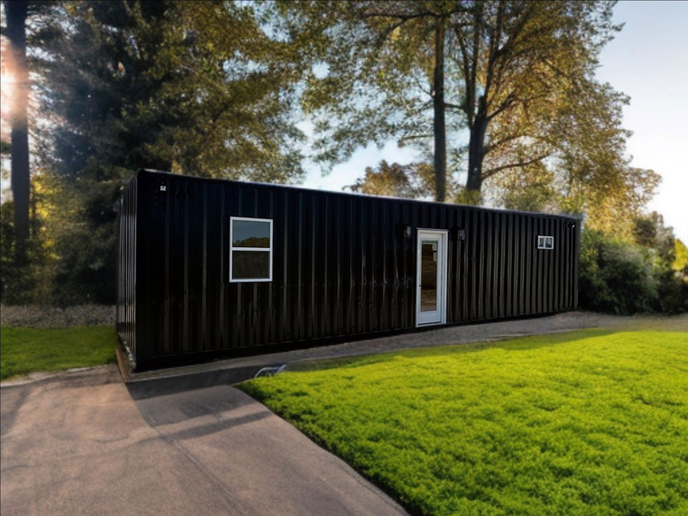
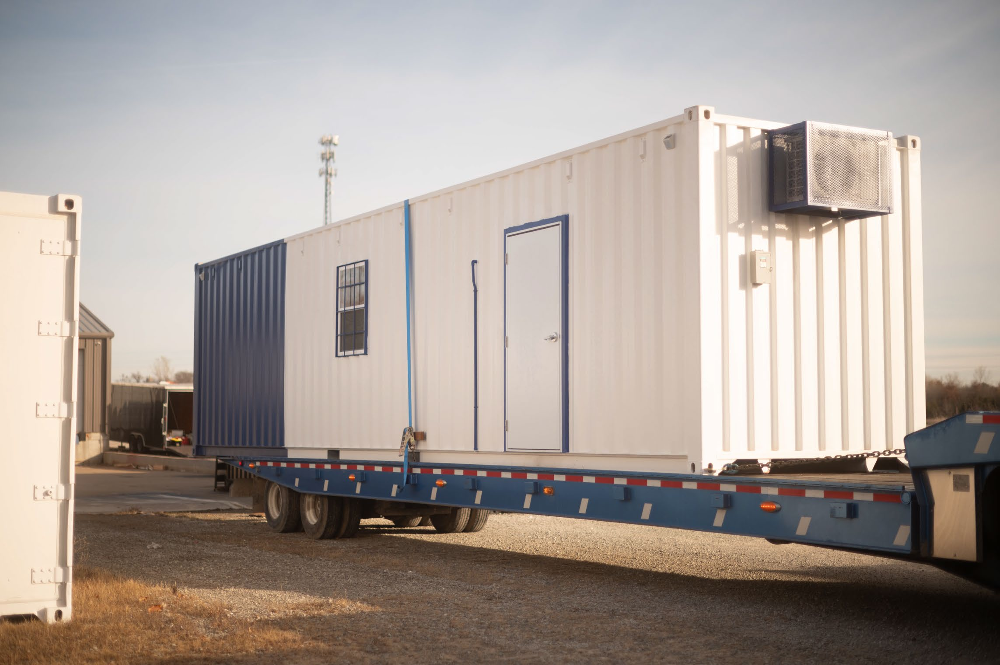
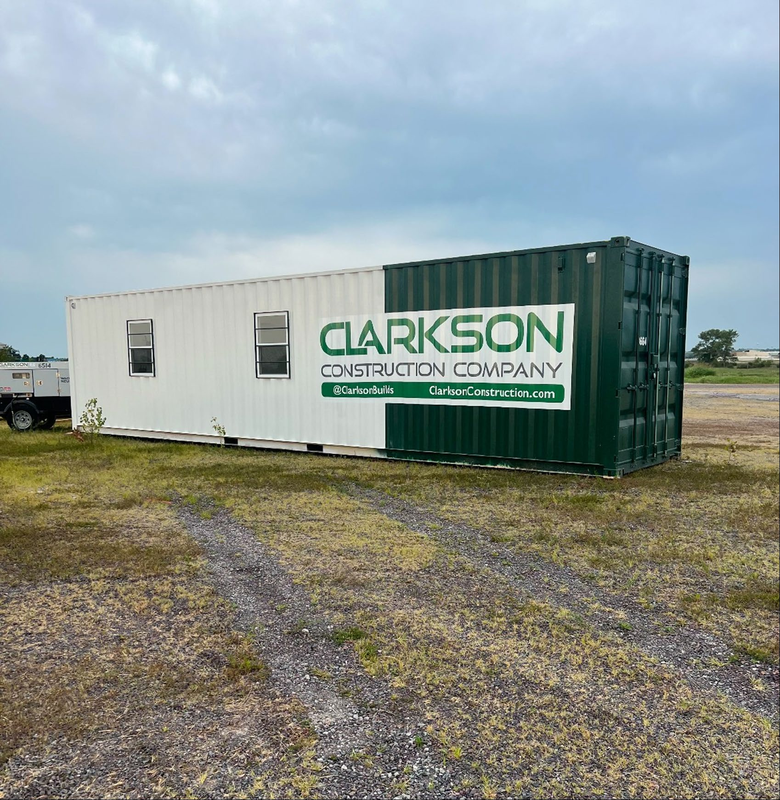
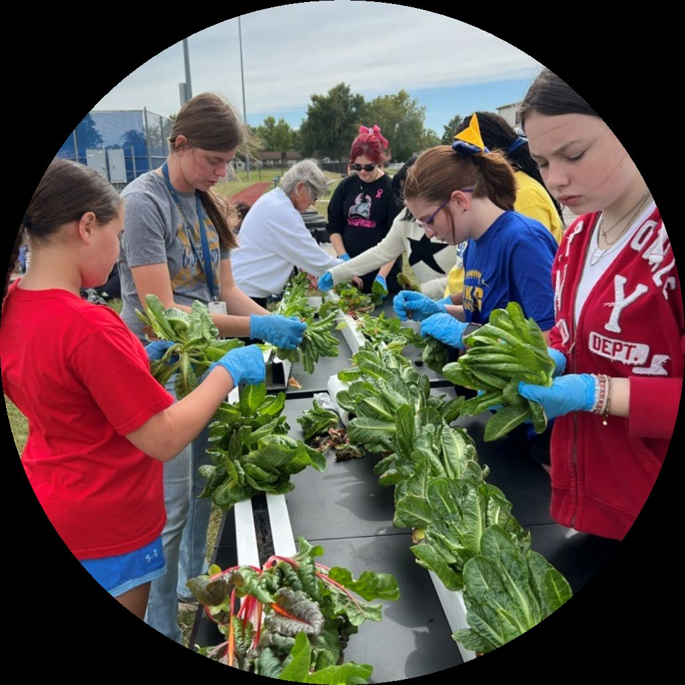
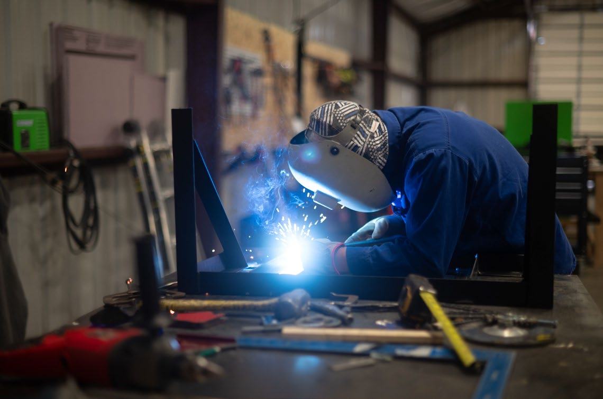
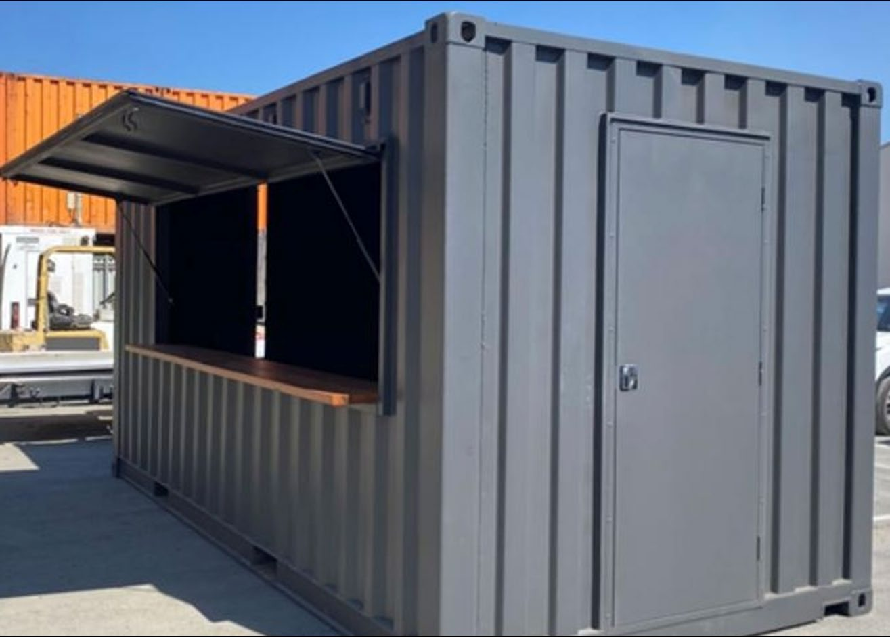
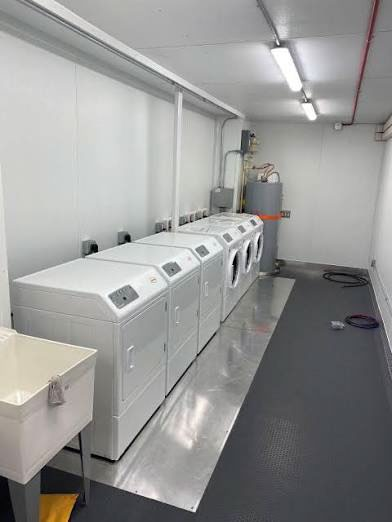
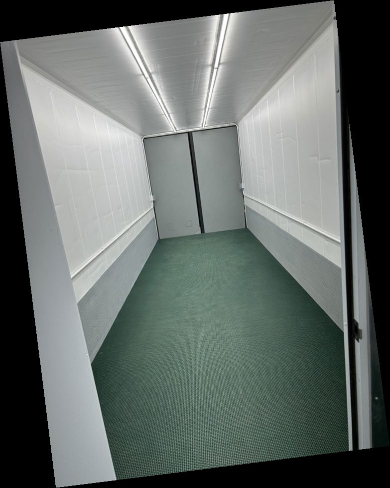
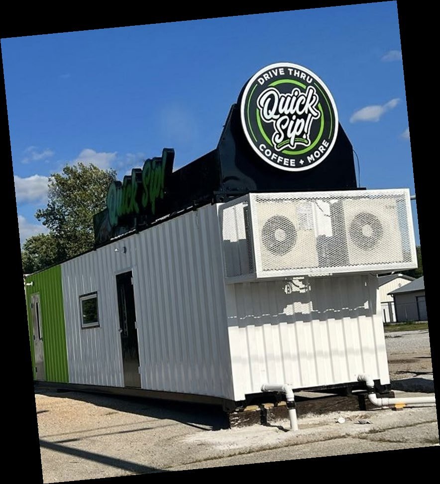
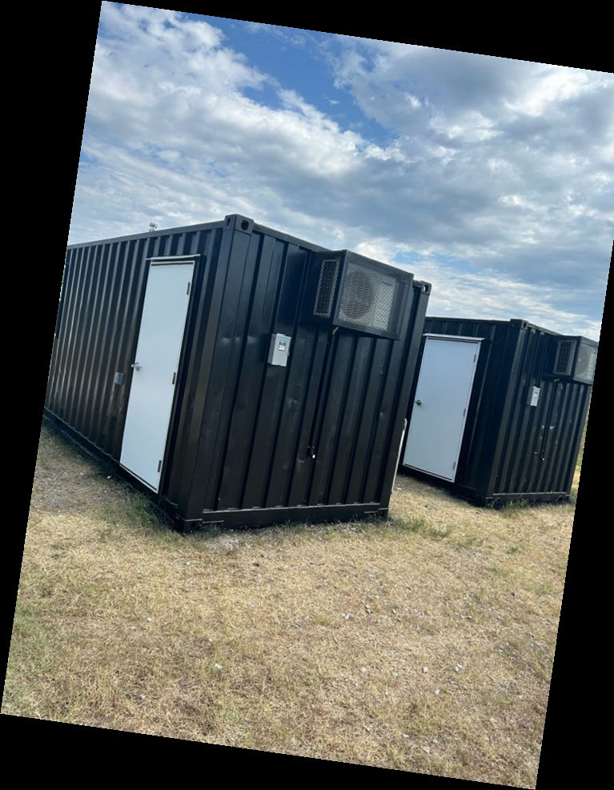

620 Homes
Studio, double and multi-bedroom configurations with kitchen, bath, climate control and durable interior finishes.
Explore 620 Homes →

High-quality, customizable shipping-container structures designed for durability, sustainability and modern functionality.
620 Fabrication specializes in transforming shipping containers into high-quality customizable structures for housing, job sites, food production and specialty applications.

Studio, double and multi-bedroom configurations with kitchen, bath, climate control and durable interior finishes.
Explore 620 Homes →
Fully customizable job-site and commercial offices with durable finishes, security upgrades and built-in storage.
Explore 620 Offices →
Container-based hydroponic systems that support controlled-environment food production and hands-on education.
Explore 620 Farms →Based in Pittsburg, Kansas, 620 Fabrication brings innovative design and expert craftsmanship to every build.

Cold storage, bathroom stalls, laundromats, retail shops and food/beverage stands are all part of the specialty-build platform.





Tell us what you need and we can start with the right 620 platform.